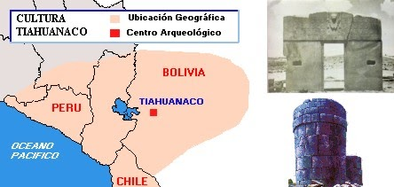
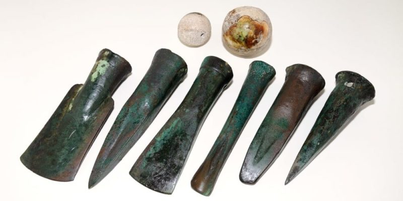
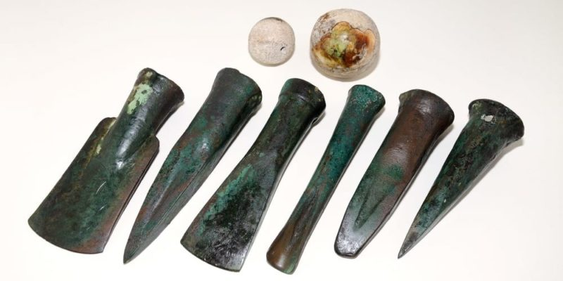
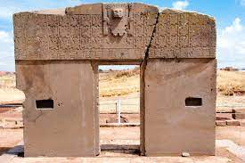

La ciudad de Tiwanaku
TIWANAKU
Tiahuanaco o Tiwanaku es una antigua ciudad arqueológica, capital del Estado tiahuanacota, ubicada 21 kilómetros al sureste del lago Titicaca en el departamento de La Paz al
oeste de Bolivia, fue el centro de la civilización tiahuanacota, una cultura preincaica que basaba su economía en la agricultura, la ganaderia y la arquitectura, y queabarcó los territorios de la
meseta del Collao entre el oeste de Bolivia, suroeste de Perú, el norte de Argentina y el norte de Chile.

ANTECEDENTES
Se considera que Tiahuanaco es una de las culturas más longevas de América del Sur, con 25 siglos de duración desde el 1500 a. C. hasta el año 1000 d. C. La urbe prehispánica de Tiahuanaco fue la
capital de un estado andino que comprendía el territorio nombrado como la Meseta del Altiplano. Esta cultura se caracteriza por haber conocido el bronce, lo que le dio una gran ventaja tecnológica
y militar con respecto a las otras culturas de América en aquellos tiempos; prueba de ello es que se han encontrado uniones de bronce en sus construcciones, utensilios y armas.
.jpeg) 

ARQUITECTURA
Constituye la parte más importante de la cultura tiahuanacota y de su principal urbe. Se extiende por una superficie de 600 hectáreas aproximadamente. En esta ciudad se aprecia la magnificencia
de lo que fue su arquitectura; las distintas expresiones artísticas y tecnológicas hablan por sí mismas de su elevado grado de perfección. Los grandes templos tienen el cielo por bóveda, los muros
que cierran los espacios sagrados se alzan en "tabla-estacado", los segmentos de sillares se adosan a gigantescos pilares logrados con un solo bloque de piedra.

LINK PARA LA PAGINA CUATRO
link 1
link 2
link 3
link 4
link 5